Facilitator Kit — Check Before You Use
This kit is for you, the facilitator, not for learners. It has the session run sheet, the demo script, the wrong-answer protocol and an answer bank.

Before any demo
Use only fictional records in every demo.
Your task. Read the rule, then answer one question.

Name- Marks
- Phone
- ID
A learner offers their own name for the demo. What do you do?
Demo script · 2 of 3
Show the AI draft and model the check.
Show the AI draft on the screen: "On 10 August, 35 trainees from Batch 5A visited Bansal Auto Components. The plant runs a fully automated line needing no manual checks, as confirmed by the visit register."
Demo script · 3 of 3
Reveal the real register and correct the draft.
Show the real register live. It shows 32 trainees and 1 worn drill bit, and it says nothing about automation. Correct the figure, remove the unsupported claim and keep the source line honest.
Your task. Answer one question to rehearse the correction.
- Date: 10 August
- Company: Bansal Auto Components
- Trainees present: 32
- Remarks: 1 worn drill bit noted on Line 2
The register says nothing about automation. What do you do with that claim?
Wrong-answer-in-class protocol
Follow these steps when the live tool gives a wrong answer.
Use these steps for an unplanned wrong answer. Do not use them for the demo, which is wrong on purpose.
Wrong-answer protocol · step 3
Step 3 is to check the answer honestly.
Wrong-answer protocol · step 4
Step 4 is to turn the moment into evidence.
Your task. Put the 4 protocol steps in the right order.
- Pause and name it out loud.
- Mark it live, with the class.
- Check it against a real record, or say so honestly.
- Turn it into evidence in your log.